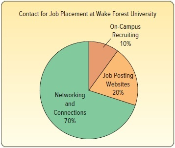

Refer to the following chart:

What is the name given to this type of chart?
Suppose that 1,000 graduates will start a new job shortly after graduation. Estimate the number of graduates whose first contact for employment occurred through networking and other connections.
Would it be reasonable to conclude that about 90% of job placements were made through networking, connections, and job posting websites?